Ecosystems · Change · Cells · Organisms · Climate
Free interactive companions for OpenSciEd Biology
Biology Companion Activities
Choose your unit, then open the activity your teacher assigned.
Browse activities ↓
Your work on this device
Who is working?
Your name goes on your lab reports, and your simulated data will be unique to you. You only need to do this once on this computer.
Enter your name as your teacher knows it
Class period Choose… Period 1
Save
Your work stays in this browser. To hand in an activity, open it and choose Preview report . On a shared device, finish saving your work and close activity tabs before choosing Switch student .
Download backup (.json) Clear saved OpenSciEd work…
No saved work yet. Choose an activity to get started.
Evidence on each card: Simulated means data from a model. Real data means evidence people measured. Some activities use both.
4 activities available Unit 1 · Ecosystem Interactions & Dynamics: Serengeti
Explore how seasonal migration, limited resources, and predator–prey interactions affect wildebeest populations.
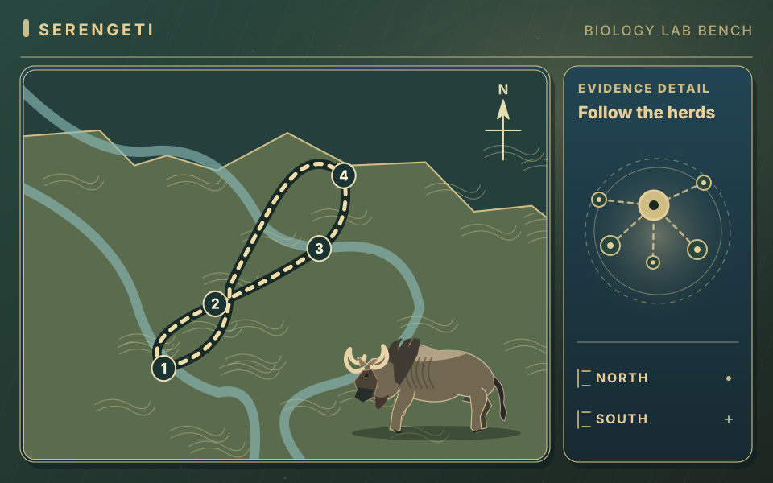
Migration map & field evidence Real data Migration Map Explorer Follow the herds through the year, inspect regional habitats, sort 18 field data cards, and compare rainfall evidence. Collect observations to explain why wildebeest migrate.
Lessons 3–4 companion · Individual or partner investigation · 40–50 min for selected questions
Not started
Open activity →
Restart this activity…
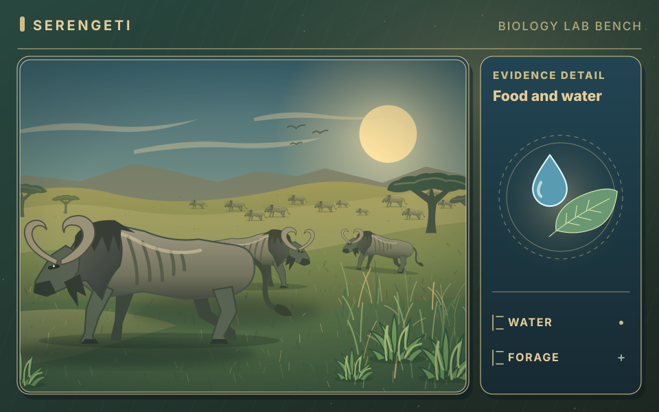
Wildebeest & limited resources Simulated + real data Carrying Capacity Run a grass-and-herd model, test a change in food, water, or shelter, and compare your results with real wildebeest population estimates.
Lesson 5 companion · Individual or partner investigation · 45–55 min for the core model
Not started
Open activity →
Restart this activity…
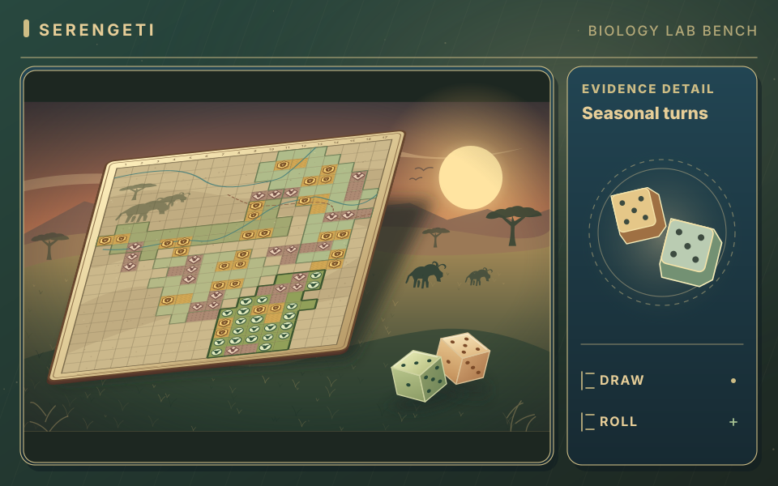
Illustrated game preview Simulated Serengeti Board Game Move wildebeest through four seasons, draw event cards, and roll dice to resolve hyena and lion hunts. Use the game’s evidence to explain how the population changed.
Lesson 7 companion · Shared-device game with three roles · 45–60 min
Not started
Open activity →
Restart this activity…
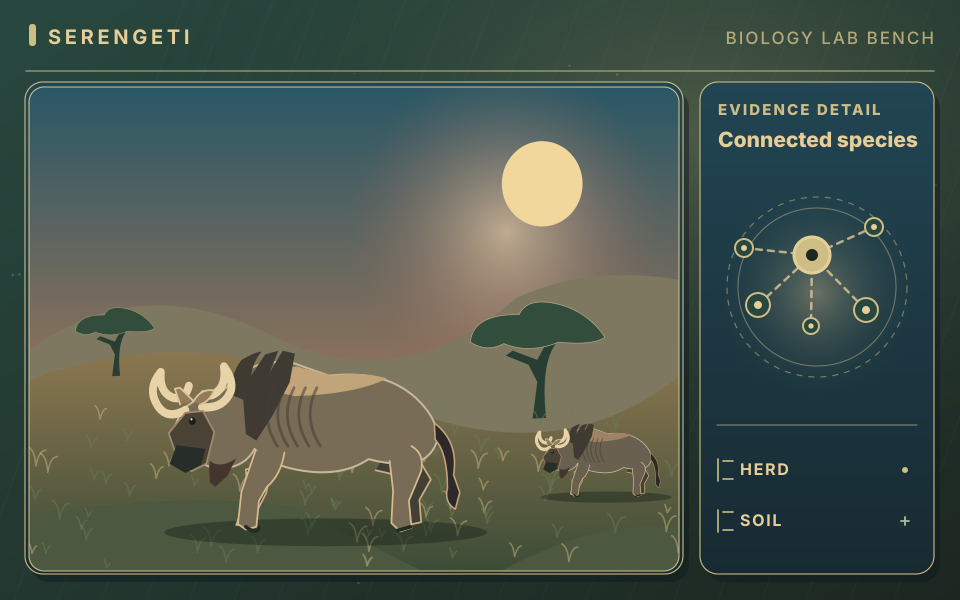
Follow a ripple through the web Simulated Serengeti Ripple Effects Connect the ecosystem, then compare how a usual migration visit and a smaller one affect dung beetles, soil, and more.
Lesson 8 supplement · Individual or partners · 15–20 min
Not started
Open activity →
Restart this activity…
4 activities available Unit 2 · Ecosystems Matter & Energy: Fires Explore why peat in the Arctic stays stored, how decomposers and cellular respiration move matter and energy, and how light drives photosynthesis.
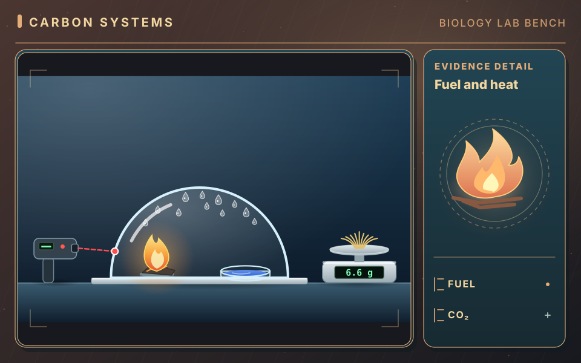
Virtual burn demonstration Simulated Burning Fuels: What Burns and Why Burn five fuels in a virtual demonstration, track changes in a carbon dioxide indicator, temperature, and mass, and explain why peat burns so much. Mostly dropdowns and taps.
Lesson 2 companion · Solo or with a partner · Approximately 40 minutes
Not started
Open activity →
Restart this activity… 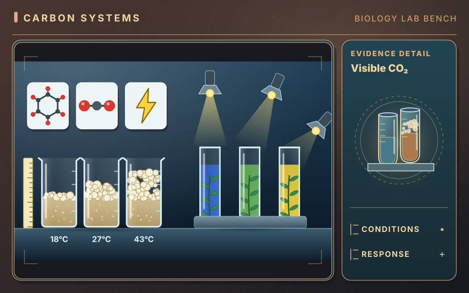
Yeast, carbon dioxide, and Earth’s tilt Simulated Fires: Peat, Decomposition & Earth’s Tilt Sort matter and energy cards, run a simulated yeast test, and test how the angle of light changes photosynthesis. Mostly dropdowns and taps.
Lessons 3 and 5 companion · Solo or with a partner · Approximately 60 minutes
Not started
Open activity →
Restart this activity… 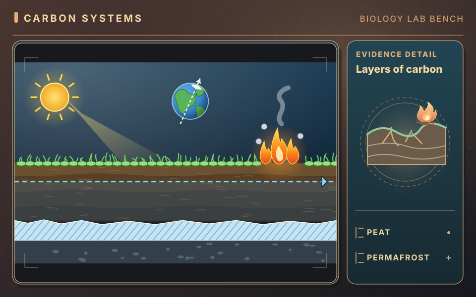
Peat bog simulator Simulated Peat Bog Carbon Lab Change Earth’s tilt, temperature, CO₂, oxygen, water level and fire. Compare photosynthesis, decomposition and burning, follow a zombie fire through a year, and test CO₂ and global warming.
Unit B.2 companion · Solo or with a partner · Approximately 45–60 minutes
Not started
Open activity →
Restart this activity… 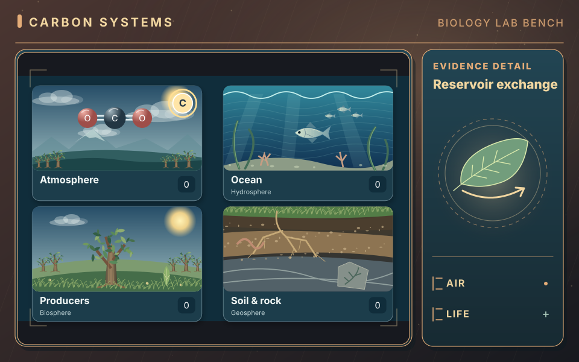
Follow a carbon atom Simulated Carbon Atom Journey Roll a die, predict your next stop, and follow official station cards through seven Earth systems. Trace matter and energy with your own journey evidence, then compare carbon and energy budgets in a model with and without fire.
Lesson 9 companion · Solo or with a partner · 30–40 min for the journey; add 20–30 min for the budget
Not started
Open activity →
Restart this activity… 6 activities available Unit 3 · Inheritance & Variation of Traits Investigate patterns in cancer data, then explore how cell division, DNA copying, p53 and gene expression can help explain cancer.
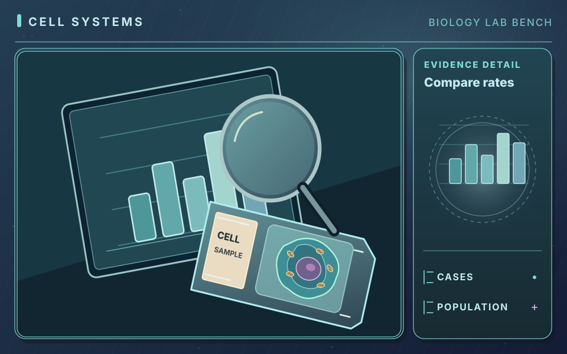
Sort, compare, and spot patterns Real data Cancer Rates Data Dive Open six case files to compare how often cancer is diagnosed, access to care, and how early cancer is found. Write an investigation question, then explore real data and pin evidence.
Lesson 1 companion · Optional Michigan design extension · 25–35 min
Not started
Open activity →
Restart this activity…
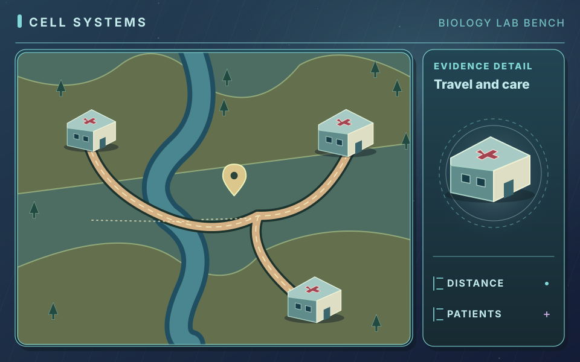
Clinic network and patient journeys Simulated Cancer Screening Design Lab Place an ultrasound machine and trained staff, follow patients across a district map, and compare how two plans affect access and cost.
B.3 engineering extension · Partners or individual · 25–30 min
Not started
Open activity →
Restart this activity…
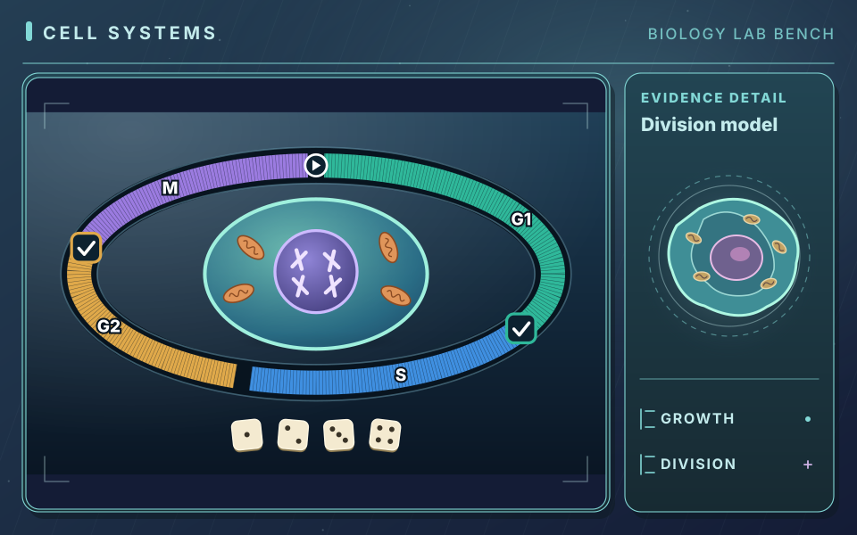
Interactive game + growth model Simulated Cell Cycle & Cancer: Checkpoints and Growth Play a multiplayer cell-cycle game, investigate checkpoint disruptions, and analyze a cell-division growth model.
Lessons 3–4 companion · Solo or 2–4 players · About 40 min for selected sections; plan on two periods for the full activity
Not started
Open activity →
Restart this activity…
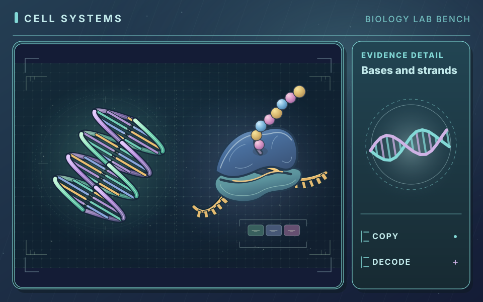
Build, copy, decode Simulated DNA Workshop: Build, Copy, Decode Match DNA bases, copy DNA, make RNA, and decode a fresh practice message into an amino acid chain.
Primer for Lessons 5–6 · No prior DNA knowledge needed · 20–30 minutes
Not started
Open activity →
Restart this activity…
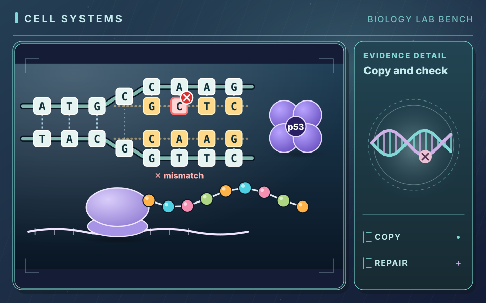
Interactive DNA models Simulated DNA Copying, p53 & Gene Expression Copy a DNA strand, find the mistakes, test three versions of p53, and follow a gene from DNA to protein.
Lessons 5–6 companion · Solo or with a partner · Two class periods, one per lesson
Not started
Open activity →
Restart this activity… 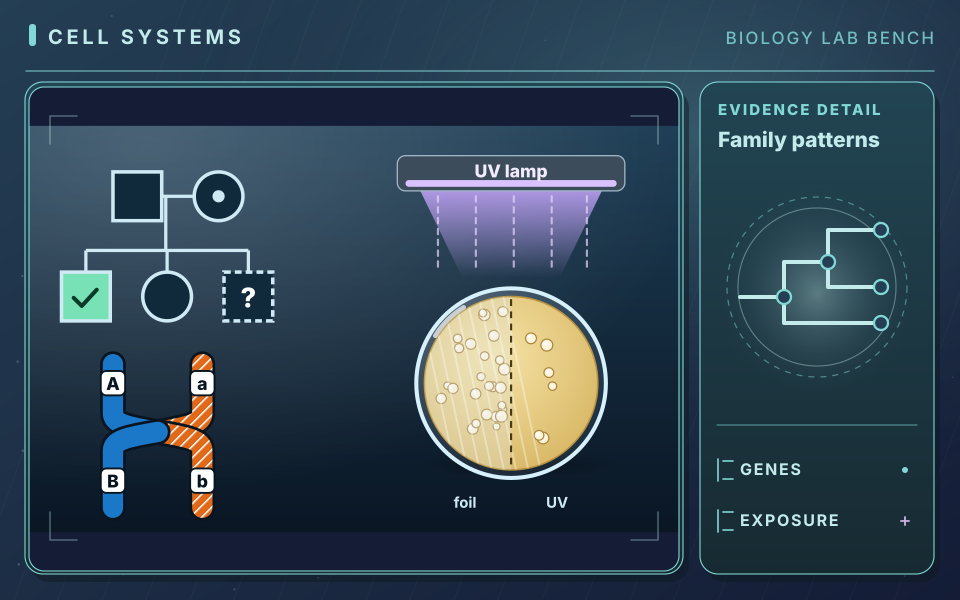
Pedigrees and a virtual UV test Simulated Inheritance, Environment & Cancer Risk Read pedigrees, follow alleles through meiosis, explore skin cancer data, and run a virtual UV yeast test. Mostly taps, very little writing.
Lessons 8–9 companion · Solo or with a partner · Approximately 60–80 minutes
Not started
Open activity →
Restart this activity…
4 activities available Unit 4 · Natural Selection & Evolution of Populations
Investigate how traits affect survival and reproduction, and how a road can change which populations mix.
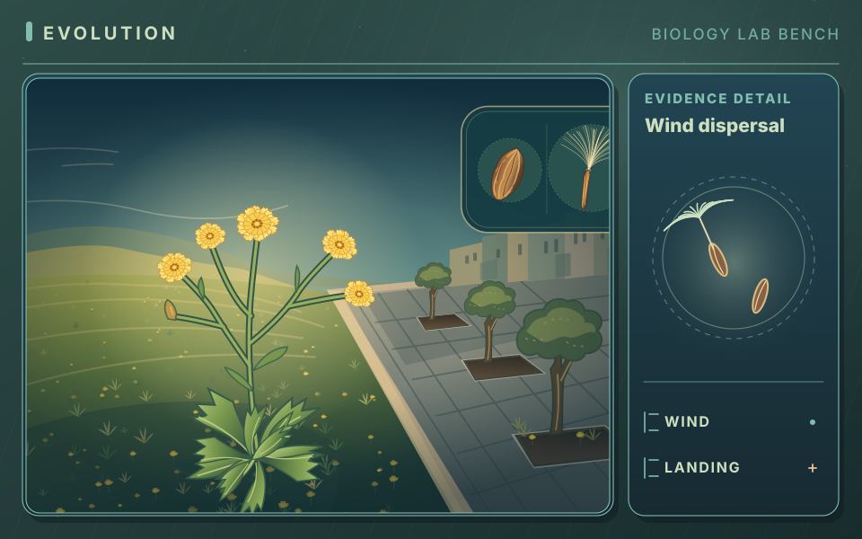
Same wind, different landings Simulated Hawksbeard Wind Lab Release feathery and nonfeathery seeds over a field and city soil patches. Compare where they land and what the numbers show.
Lesson 2 companion · Individual or partner investigation · 20–30 min
Not started
Open activity →
Restart Hawksbeard Wind Lab…
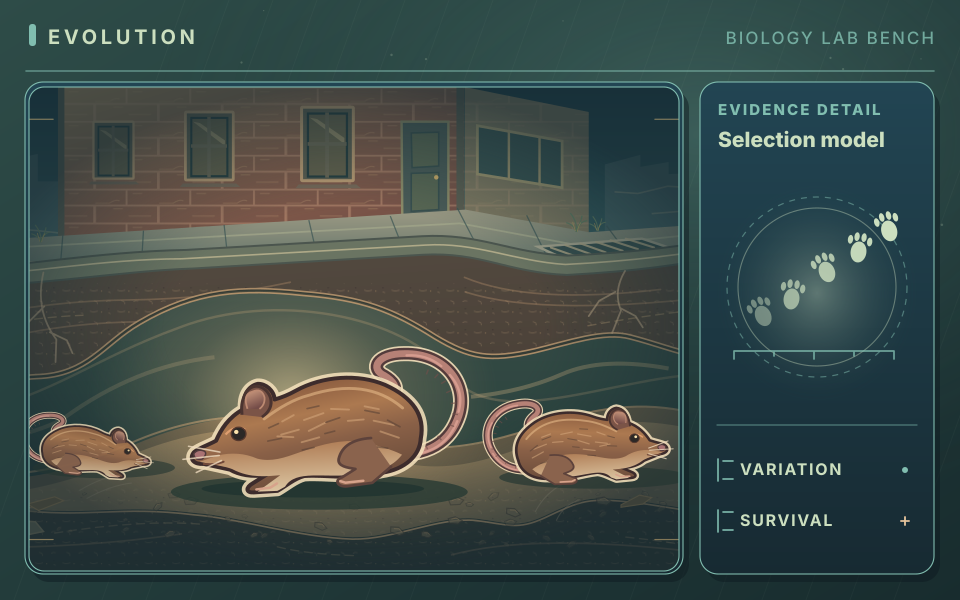
Five rat generations Simulated Rat Generations Build parent crosses and track which rats survive and reproduce. See how common a version of a gene becomes over five generations.
Lesson 3 companion · Individual or partner investigation · 25–35 min
Not started
Open activity →
Restart Rat Generations…
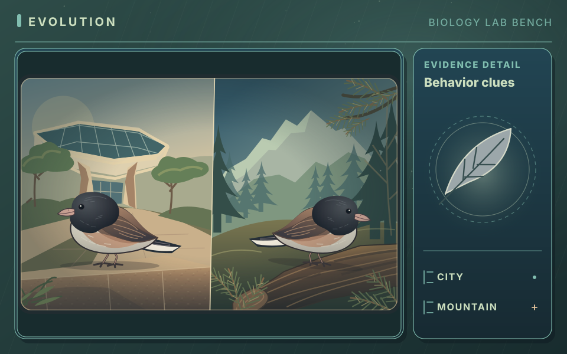
Bold birds, different places Simulated + real data Junco Investigation Compare city and mountain birds in the wild and in a shared enclosure. Use stress-hormone data to explain what might affect their behavior.
Lesson 4 companion · Individual or partner investigation · 25–35 min
Not started
Open activity →
Restart Junco Investigation…
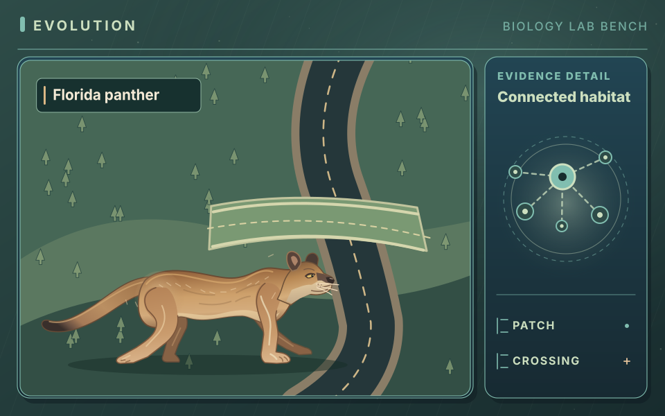
A route across a divided habitat Simulated Wildlife Corridor Lab Start with the Florida panther case, then test how a wildlife crossing affects the movement of gene versions between two habitat patches.
Lessons 7–9 companion · Individual or partner investigation · 25–35 min
Not started
Open activity →
Restart Wildlife Corridor Lab…
5 activities available Unit 5 · Common Ancestry & Speciation
Explore how changing habitats affect related bear species. See the original OpenSciEd unit .
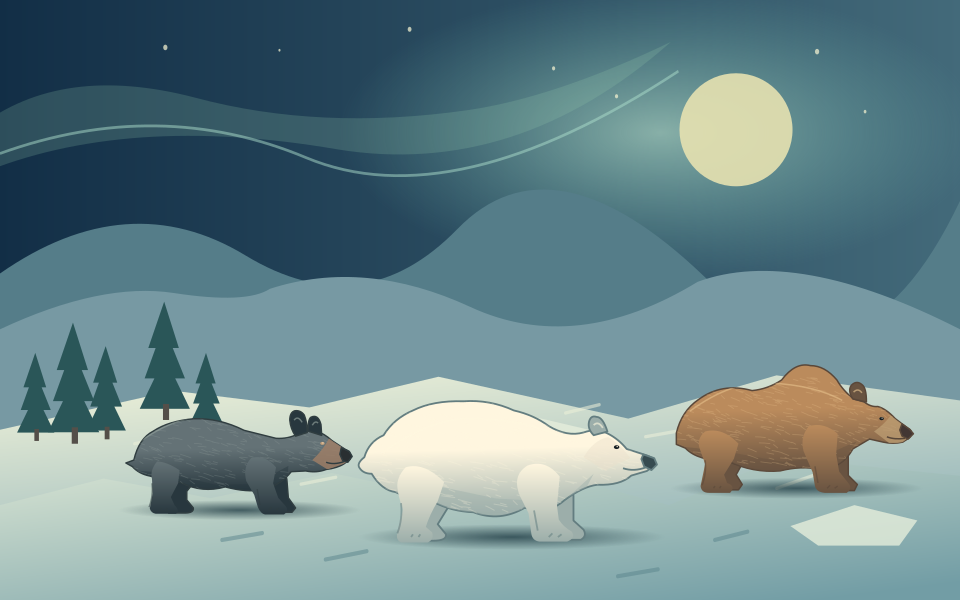
Bear sightings and sea-ice evidence Real data Three Bears in Wapusk Compare winter and summer sightings, explore sea-ice regions, and bring an evidence-based idea to your class discussion.
Lesson 1 companion · Partner or group investigation · 25–35 min digital work
Not started
Open activity →
Restart Three Bears in Wapusk…
A polar bear treadmill study Real data Bear Thermoregulation Lab Compare bear encounters and treadmill evidence, graph human surface readings, and build a model of how exercise transfers energy.
Lesson 2 companion · Individual or partner investigation · 25–35 min digital work
Not started
Open activity →
Restart Bear Thermoregulation Lab…
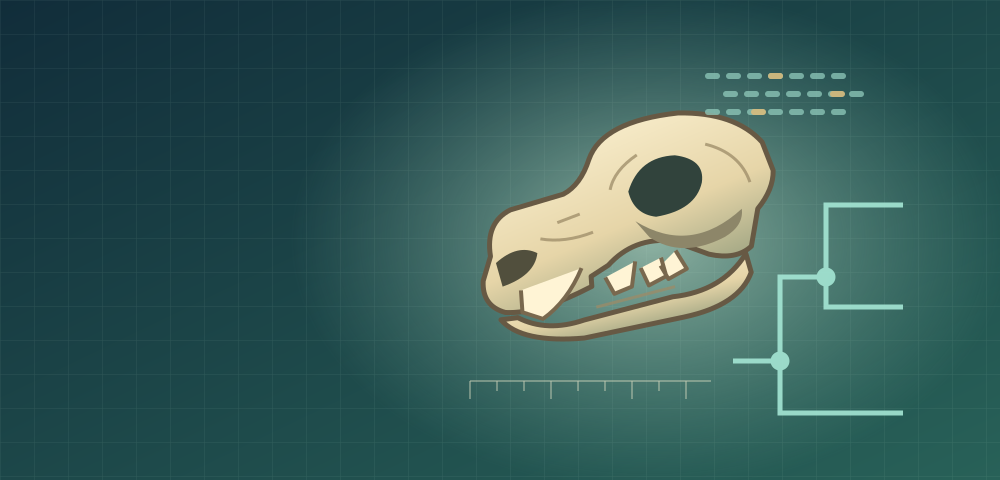
Skulls, DNA and a branching tree Real data Bear Ancestry Lab Inspect bear specimens, mark differences in real DNA, and build a tree to test which bears are most closely related.
Lesson 3 companion · Individual or partner investigation · 25–35 min digital work
Not started
Open activity →
Restart Bear Ancestry Lab…
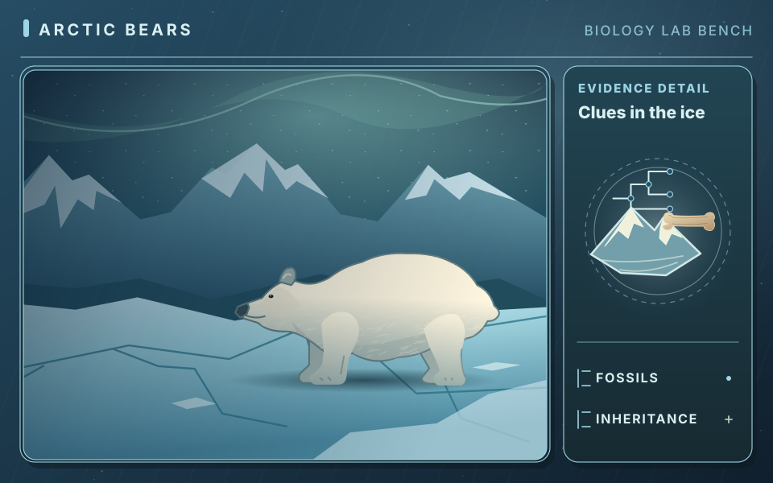
Ice, fossils and inherited traits Simulated + real data Ice Age Bear Speciation Explorer Move model bears as ice retreats, investigate fossil sites, and revise your explanation with genetic evidence.
Lesson 4 companion · Individual or partner investigation · 30–40 min digital work
Not started
Open activity →
Restart Ice Age Bear Speciation Explorer…
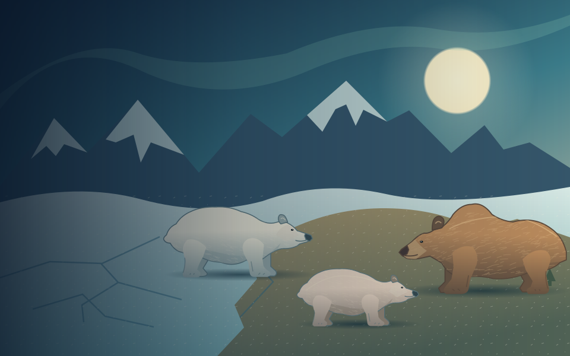
Ice, family ties, and an inheritance model Simulated + real data Arctic Bear Futures & Hybridization Trace a real bear family, model ten polar and brown bear matings, and test a claim about a changing Arctic.
Lesson 6 companion · Individual or partner investigation · 25–35 min digital work
Not started
Open activity →
Restart Arctic Bear Futures & Hybridization…